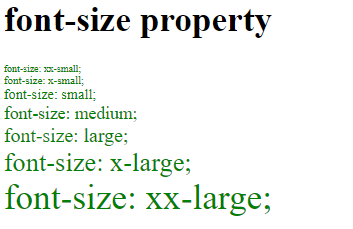
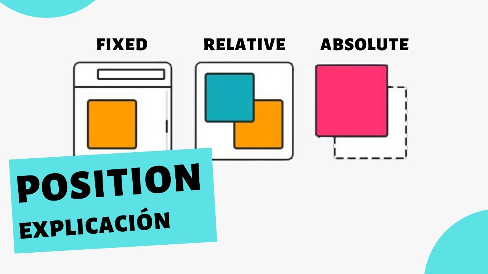
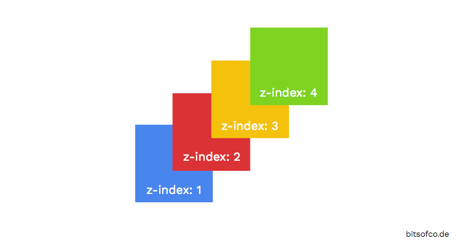

| Nombre del atributos |
Descripción |
Valores posibles |
Ejemplos de uso |
Imagen Representativa |
Fuente de información |
| font-size |
Una tipografía que permite indicar el tamaño que tendrá la fuente que vamos a utilizar. |
xx-small | x-small | small | medium | large | x-large | xx-large |
.container {
font-size: 20px;
}
|
 |
Lenguajecss.com |
| border-radius |
Para indicar este radio |
N = Cualquier número |
.element {
border-radius: 25px;
}
|
 |
Lenguajecss.com |
| display |
Cambia el tipo o forma de representación del elemento. |
none; inline; block; inline-block; flex; inline-flex; grid; inline-grid; list-item; table; table-cell; table-row; contents |
div {
display: inline;
}
|
 |
Lenguajecss.com |
| flexbox (display: flex;) |
Es un sistema de elementos flexibles que llega con la
idea de olvidar estos mecanismos y acostumbrarnos a una mecánica más potente, limpia y personalizable
|
flex; inline-flex |
.container {
display: flex;
flex-direction: column;
}
|
 |
lenguajecss.com |
| position |
La propiedad position es una propiedad CSS que se puede utilizar para modificar la posición donde aparecerá un elemento. |
static; relative; absolute; fixe; sticky |
div {
position: relative;
}
|
 |
Lenguajecss.com |
| box-shadow |
Se denominan sombras sobre cajas a las sombras en CSS que se pueden crear en una etiqueta o elemento HTML. |
n = Cualquier número |
.element {
box-shadow: 5px 5px;
}
|
 |
lenguajecss.com |
| overflow |
si tenemos suficiente contenido en un elemento y hemos forzado el tamaño de ancho y/o alto del elemento, se va a producir el caso en el que su contenido no tiene suficiente espacio, por lo que se producirá un desbordamiento CSS
para controlar estos casos, tenemos a nuestra disposición la propiedad overflow en CSS |
visible | hidden | scroll | auto |
.element {
overflow: hidden;
}
|
 |
lenguajecss.com |
| z-index |
es una forma de indicar una distancia en el eje Z, es decir, en el eje de profundidad. |
auto | N = cualquier numero |
.element{
z-index: 5px;
}
|
 |
lenguajecss.com |
| opacity |
Una opción interesante y relacionada podría ser la posibilidad de utilizar la propiedad opacity, especialmente útil si se utiliza junto a transiciones o animaciones. |
N = del 0 al 1 |
.item-2 {
opacity: 50%;
}
|
|
lenguajecss.com |
| margin y padding |
El tamaño de dichos márgenes se puede alterar en conjunto o de forma específica a cada una de las zonas del elemento.
Al igual que con los márgenes, los padding tienen varias propiedades para indicar el relleno de cada zona.
|
N = cualquier valor |
.examples {
margin: 15px;
padding: 15px;
}
|
 |
lenguajecss.com |
| text-shadow |
rear sombras en textos mediante CSS es muy útil,
puesto que es una forma interesante de suavizar y hacer más legibles los textos
|
none O N = cualquier valor |
.text {
text-shadow: 4px 4px;
}
|
|
lenguajecss.com |
| grayscale |
Escala de blanco y negro |
0% | 100% |
img:hover {
filter: grayscale(0%);
}
|
|
lenguajecss.com |
| outline-width |
Tamaño de los bordes. Tamaño predefinido o específico. |
N = cualquier valor |
.element {
outline-width: 5px;
outline-style: solid;
outline-color: red;
}
|
|
lenguajecss.com |
| scrollbar-color |
Le da color a la barra de desplazamiento. Primer parámetro a la barra y segundo al fondo. |
color |
.element-1 {
scrollbar-color: deeppink indigo;
}
|
|
lenguajecss.com |